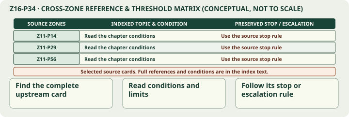

Z16-P34 · Field reference atlas · New manuscript
Navigation, Map, Compass, Datum, PLB and Radio Equipment Index
Align topographic map datums, magnetic declination, iron-rock deflection, cold battery limits, and registered SARSAT PLB, VHF communications across Z08 and Z11.
When it applies · Land navigation, route tracking, and emergency rescue signaling.
Equipment · Full offline reader (Z08, Z11), primary zone cards, and local emergency and agency references.

Actions
- Match map datum (WGS84 vs NAD27) to GPS settings before plotting coordinates (Z11-P12) and apply current local magnetic declination carefully—never inferring present-day declination from historical reference maps like the 1965 Ely excerpt (Z11-P14).[A01, N02, N03]
- Cross-check compass bearings against terrain features in northern Minnesota iron-formation and gabbro bedrock zones where magnetite deflects needles locally (Z08-P20, Z11-P29), and reject moss-on-north folklore unconditionally (Z11-P35).[A04, R20, N03]
- Keep paper maps and baseplate compass as primary cold-proof navigation alongside warm-carried electronics, and register 406 MHz PLBs, satellite messengers with NOAA before trips so rescue dispatch receives emergency contacts immediately (Z11-P56, Z11-P57).[A09, N08, N09]
Failure recognition · Mixing NAD27 and WGS84 coordinates, ignoring iron-rock compass anomalies, or carrying an unregistered beacon delays SAR teams by miles or hours.[N02, N03, N08, R20]
Verify · Map vintage, datum, current declination, iron-rock cross-checks, and active beacon registration are verified pre-trip.[N02, N03, N08]
Stop or change course · Stop advancing when position uncertainty grows; apply STOP (Z11-P43), relocate to known handrail, last verified point, or activate rescue signaling.[N01, N08]
Evidence and editorial notes
- A01 · FEMA / Ready.gov · Make a Plan (current web edition)
- Section: Cross-zone emergency prioritization and stop-threshold preservation · Conditions: Synthesizing Z01-Z15 emergency decision summaries in Z16
Support: Condensed emergency references must retain exact life-safety priorities, evacuation triggers, and call-911 thresholds from upstream primary guidance.
Limitations: Any summary omitting an upstream exception, stop rule, or specialist hold is invalid and must defer to the full zone card. · Conflicting evidence: None noted.
Editorial note: Governs Z16 emergency cross-reference fidelity. · Specialist reviewer: Emergency management and editorial QA reviewer
Primary source · checked 2026-11-24 - A04 · Minnesota DNR · Minnesota Geology and Glacial History Overview (Current web edition)
- Section: Geological and natural-material cross-zone lookup · Conditions: Linking Z08 materials with Z02 shelter, Z03 fire, Z09 tools, and Z11 compass limits
Support: Material cross-references preserve dust/silica hazards, wet-rock spalling stops, iron-rock compass deflection, and public-land collecting prohibitions.
Limitations: Material summaries never imply structural load ratings or chemical cookware safety. · Conflicting evidence: None noted.
Editorial note: Anchors Z16 materials index. · Specialist reviewer: Geologist and materials reviewer
Primary source · checked 2026-11-25 - A09 · Minnesota Poison Control System · Poison Help 1-800-222-1222 and Regional Plant/Mushroom Guidance (Current web edition)
- Section: Consolidated emergency communication, reporting, and referral directory · Conditions: Cross-zone emergency escalation across Z01, Z05, Z06, Z07, Z10, Z11, Z13, Z15
Support: Emergency lookup tables separate 911 life-threat activation, Poison Help 1-800-222-1222, utility leak/outage lines, and DNR wildlife/TIP reporting.
Limitations: Cell coverage fails in remote areas; pre-plan offline communication and backup evacuation routes. · Conflicting evidence: None noted.
Editorial note: Standardizes Z16 emergency contact index. · Specialist reviewer: EMS and emergency communications reviewer
Primary source · checked 2026-11-25 - N01 · USGS · US Topo Maps for America (current web edition)
- Section: US Topo Maps > Coordinate Grids, Scale and Currency · Conditions: Map reading and trip planning in the United States
Support: USGS topographic maps provide elevation contours, hydrography, roads, land cover and scale/date metadata; check publication date because trails, roads and structures change over time.
Limitations: Historical topo sheets (such as 1965 Ely quadrangle) illustrate symbols only and never establish current routes or declination. · Conflicting evidence: None; aligns with USGS-MAP-R and NOAA-D.
Editorial note: Grounds map margin, scale, date and historical-excerpt limits in Z11. · Specialist reviewer: Cartography and navigation
Primary source · checked 2026-11-24 - N02 · USGS · Topographic Map Symbols (agency PDF)
- Section: Topographic Map Symbols > Contours, Water, Vegetation and Boundaries · Conditions: Interpreting standard USGS 1:24,000 and US Topo map sheets
Support: Contour spacing indicates slope steepness, index contours give elevation values, blue features mark water/wetlands and standard symbols distinguish roads, trails, cliffs and marshes.
Limitations: Small terrain hazards (boulders, undercut banks, fallen timber, thin ice) fall below map contour interval resolution. · Conflicting evidence: None; anchors terrain and contour interpretation cards.
Editorial note: Explains contour reading alongside map-resolution limitations. · Specialist reviewer: Cartography and search and rescue
Primary source · checked 2026-11-24 - N03 · USGS · What is a Topographic Map (current web edition)
- Section: What is a Topographic Map > Contours and Relief · Conditions: Matching three-dimensional terrain shapes to two-dimensional contour lines
Support: Closed contour rings denote peaks or depressions (hachured), V-patterns point uphill in valleys/drainages and wide spacing marks gentle slopes while tight spacing marks cliffs or steep grades.
Limitations: Dense forest canopy or snow drifts can obscure subtle terrain features shown on the map. · Conflicting evidence: None; core topographic terrain-association evidence.
Editorial note: Supports ridge, valley, saddle and handrail terrain-interpretation cards. · Specialist reviewer: Navigation and cartography
Primary source · checked 2026-11-24 - N08 · NOAA NCEI · Magnetic Declination (current web edition)
- Section: NOAA Magnetic Declination > definition and true-bearing conversion · Conditions: Using magnetic baseplate compasses near metal, electronics or iron-rich rock
Support: Declination is between true and magnetic north and varies by location and time. Grid convergence is separate. A device may already apply a correction.
Limitations: NOAA definition does not establish site-specific interference distances or diagnosis of magnetic anomalies. · Conflicting evidence: Aligns with B014-P13 and B014-P14.
Editorial note: Grounds declination conversion, metal-clearance and magnetic-anomaly cards. · Specialist reviewer: Navigation and geophysics safety
Primary source · checked 2026-11-24 - N09 · NPS · Outdoor Emergency Plan (current web edition)
- Section: If You Get Lost; Seek help · Conditions: Lost hiker who cannot safely retrace steps and has sought rescue
Support: Report last known location and landmarks. Stay put while awaiting help unless an immediate threat requires getting to safety.
Limitations: Navigation, signaling method and safe movement depend on site and responder instructions. · Conflicting evidence: See A02 claim audit for boundaries.
Editorial note: Core evidence for lost-person psychology, signaling and SAR coordination cards. · Specialist reviewer: Search and rescue
Primary source · checked 2026-11-24 - R20 · Minnesota DNR · Minnesota Geology and Glacial History Overview (Current web edition)
- Section: Iron-formation magnetism and compass deflection awareness · Conditions: Northern Minnesota iron ranges and mafic volcanic rock
Support: Magnetite-bearing iron formations and gabbro outcrops can visibly deflect magnetic compass needles locally.
Limitations: Deflection varies over short distances; cross-check bearings against terrain and non-magnetic cues rather than assuming uniform declination. · Conflicting evidence: None noted.
Editorial note: Cross-links Z08 geology with Z11 compass limits. · Specialist reviewer: Geophysicist and navigation specialist
Primary source · checked 2026-11-25
Source lineage · New manuscript (Z16 P20 equipment index) · Classification · New manuscript.